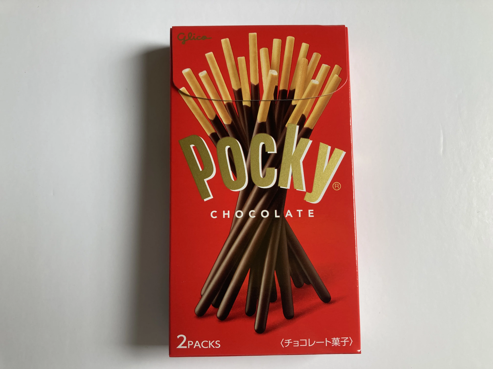

Pocky Chocolate ポッキー チョコレート

The Signature Snap
The texture of Pocky Chocolate is what often makes it stand out. Global voices repeatedly describe the satisfying crispness of the biscuit stick. It’s a delicate crunch, light yet firm enough to hold its shape. This gives way to a smooth, thin layer of milk chocolate that coats most of the stick, a contrast that many find just right. The way the biscuit and chocolate work together, delivering that crisp-then-smooth sensation, is a defining characteristic that wins people over. It’s a texture that feels reliable, bite after bite.
A Taste That Just Works
When it comes to flavor, people consistently describe Pocky Chocolate as having a balanced taste. It’s not overly sweet, which is a common point of praise. The milk chocolate flavor is classic and dependable, often noted for its subtle cocoa notes that complement the biscuit rather than overpowering it. This careful balance between the biscuit's mild, slightly savory notes and the chocolate's gentle sweetness is what many reviewers appreciate. It means you can have a few sticks without feeling overwhelmed, making it an easy snack to reach for.
Everyday Happiness, Global Memories
The happiness Pocky brings often comes wrapped in everyday scenes. For many, it's a comforting snack associated with childhood, a familiar taste that brings back memories of after-school treats or shared moments with friends. We've seen comments describing parents tucking a pack into their child's lunch bag, or students grabbing one for a quick break between classes. It's the kind of snack that fits perfectly into a busy schedule, a little pick-me-up that provides a consistent, happy flavor. Whether it’s a quick on-the-go bite or something to share during an afternoon chat, Pocky often becomes part of these small, happy rituals. It’s a widely recognized staple in Japanese convenience stores and supermarkets, and that easy availability helps it become a part of daily life for so many.
Beyond the Pack: Unexpected Pairings
While Pocky is great on its own, fans worldwide have found creative ways to enjoy it. We've collected many mentions of people using Pocky as an edible stirrer for their morning coffee or a mug of hot chocolate, adding a little extra flavor and fun to their drink. Others enjoy dipping Pocky into milk, tea, or even ice cream, turning a simple snack into a slightly more indulgent treat. These pairings show how Pocky can adapt to different cravings and moments, becoming more than just a pre-packaged snack. It’s this versatility that often surprises new fans and delights long-time enthusiasts.
What Makes Pocky Stand Out
When compared to other chocolate-covered biscuit sticks, Pocky Chocolate is frequently noted for its distinct quality. Reviewers often point out its less sugary chocolate flavor and the thinner, crisper biscuit, which contribute to its balanced profile. While some wish for a thicker chocolate coating or note that the chocolate can melt in warmer weather, the overall consensus points to a snack that delivers reliable satisfaction. It’s this consistent experience, from the snap of the biscuit to the familiar taste of the chocolate, that keeps people coming back for Pocky.